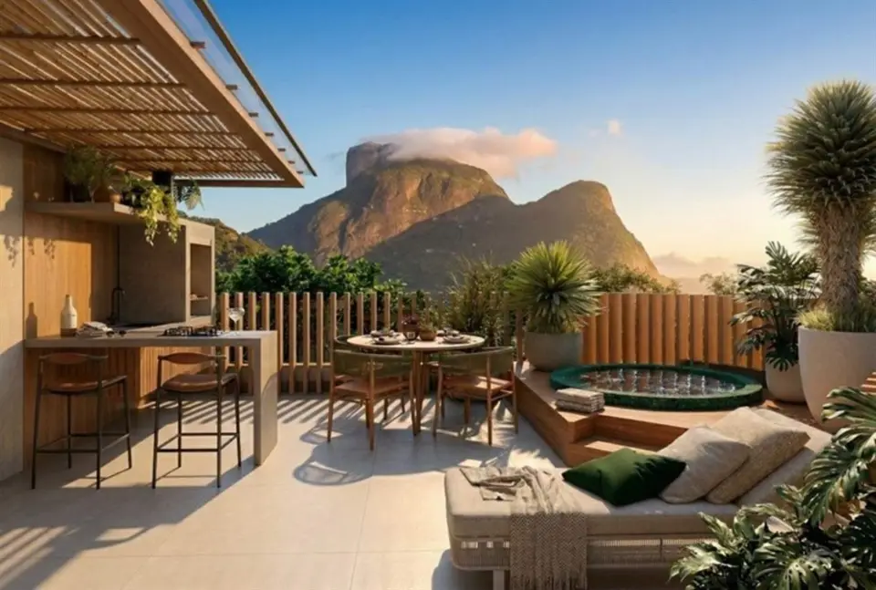

Imagens


Galeria
Imagens ilustrativas, de caráter artístico, conforme material da incorporadora.

Studios na Barra da Tijuca próximos ao metrô e à praia
Oceà Studios Jardim Oceânico | Studios na Barra da Tijuca próximos ao metrô e à praia
O Oceà Studios Jardim Oceânico é um empreendimento boutique localizado na Barra da Tijuca, Rio de Janeiro, com apenas 25 unidades e opções de studios, rooftop e duplex.
Com localização estratégica no Jardim Oceânico, o empreendimento está a 100 metros do Metrô Jardim Oceânico e a 600 metros da Praia do Pepê, oferecendo fácil acesso à mobilidade, lazer, gastronomia e serviços da região.
Os studios possuem plantas de 24 a 35 m², com proposta funcional, moderna e acabamento premium. O empreendimento também conta com opção de cobertura / rooftop / duplex de 73 m².
Entre os diferenciais informados estão obra por administração, obra a preço de custo, acabamento premium, piso em porcelanato.
A localização também proporciona proximidade com o BRT, Praça do Pomar, Praia da Barra, Praia do Pepê e Avenida Olegário Maciel, além de supermercados, academia, farmácias, escolas, bares e restaurantes.
O Oceà Studios reúne localização privilegiada no Jardim Oceânico, mobilidade e diferentes tipologias para quem busca morar ou investir na Barra da Tijuca.
Metragens, tipologias e disponibilidade conforme material oficial da incorporadora, sujeitos a alteração sem aviso. Valores e condições confirmados na tabela vigente. Seleção e atendimento: Paulo Cotrim, CRECI-RJ 77677-F.
Imagens ilustrativas, de caráter artístico, conforme material da incorporadora.